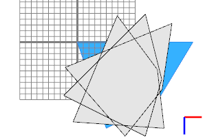
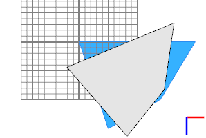
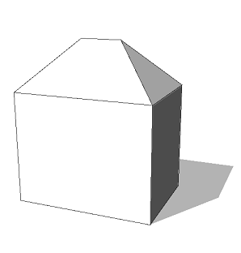
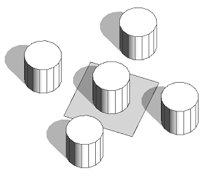
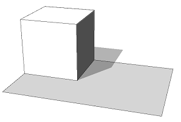

push / pop operation
operations A sequence of shape operations to execute.
The [ operation pushes the current shape onto the top of the shape stack. It must be matched by a succeeding ] operation, which pops the shape on top of the shape stack and deletes the shape.
Related
Examples
Rotation Example

Lot -->
extrude(15)
r(scopeCenter, 0, 22.5, 0) X.
r(scopeCenter, 0, 22.5, 0) X.
r(scopeCenter, 0, 22.5, 0) X.
In this example, the extruded shape is rotated three times and assigned to a new shape (X). The rotations build on each other.

Lot -->
extrude(15)
[ r(scopeCenter, 0, 22.5, 0) X. ]
[ r(scopeCenter, 0, 22.5, 0) X. ]
[ r(scopeCenter, 0, 22.5, 0) X. ]
Encapsulating the rotations and create shape operations with a push/pop pair makes all shapes X coincide. The rotations are independent of each other.
House Example

House -->
extrude(10)
comp(f) { top : roofHip(45) Roof. | all = House.}
House -->
[ t(0,10,0) roofHip(45) Roof. ]
extrude(10)
comp(f) { top : NIL | all = House. }
Both rules generate the same result. In the second rule, the roof is generated first using push/pop operations.
Translation Example

House-->
Cylinder
[ t( 0, 0, ' 1) Cylinder ]
[ t( 0, 0, '-1) Cylinder ]
[ t(' 1, 0, 0) Cylinder ]
[ t('-1, 0, 0) Cylinder ]
Cylinder -->
primitiveCylinder(16, 1, 2)
Cylinder assets are inserted five times. Each scope is translated based on the scope of the initial shape.
Condition Example

Lot -->
s(1,1,1)
[ case scope.sx == 1 : primitiveCube() Cube.
else : primitiveCylinder() Cylinder. ]
Conditional and stochastic statements must not have preceding operations. Use push and pop to encapsulate a case switch.